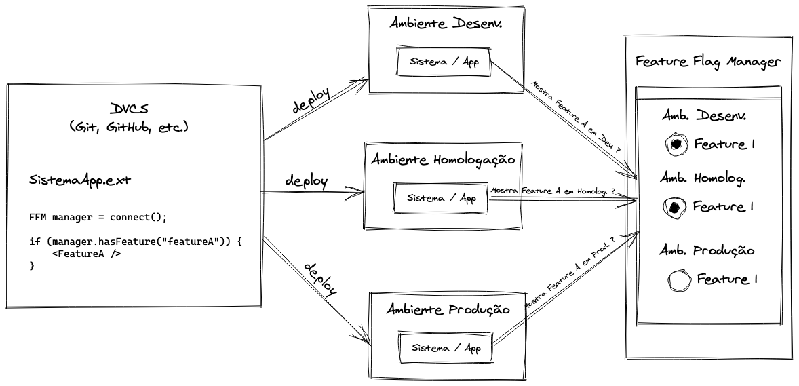

Flags vs Branching
Desenvolvimento baseado em branches permite que os desenvolvedores colaborem em torno de uma base central de código mantendo mudanças de uma funcionalidade isoladas na sua própria branch. Com a adição de feature flags, branches de funcionalidade se tornam ainda mais poderosas e gerenciáveis já que conseguimos separar a entrega de funcionalidades do deploy do código.
As dores de branches de longa duração
Tradicionalmente, o desenvolvimento de novas funcionalidades tem sido feito via branches. E, essas branches, dependendo da funcionalidade, podem perdurar por meses a fio com o restante do desenvolvimento do produto acontecendo em paralelo. Branches de vida longa normalmente criam um débito técnico do tipo "eu prometo que vou resolver esses conflitos depois". Isso se contrapõe com a premissas do Git que seriam: minimizar os problemas de conflitos de merge, falta de dependências e código duplicado. Pior, esses débitos aumentam proporcionalmente ao tempo de duração da branch. Então, acabamos concentrando esforços do time em resolver conflitos de merge. Para minimizar esse tipo de problema, branches combinadas com feature flags permitem que os desenvolvedores consigam gerenciar branches de forma efetiva e continuem entregando valor e software de qualidade.
Feature Branching
Como ajuda no processo de desenvolvimento, times de engenharia adotaram os DVCS - sistemas de controle de versão distribuídos - como o GitHub e Bitbucket. Esses sistemas permitem a colaboração de desenvolvedores em torno de uma base de código comum e fazem o uso de branches para o desenvolvimento de melhorias e novas funcionlidades. Esse modelo se tornou a base do ciclo de desenvolvimento moderno porque permite que os desenvolvedores não fiquem "se esbarrando" no progresso de outros desenvolvedores.
Um problema desse modelo de feature branches é que o gerenciamento de releases fica diretamente relacionado ao deployment do código. Isoladamente, feature branching força os engenheiros a gerenciar as entregas dentro das limitações do sistema de versionamento. Usuários não-técnicos não conseguem (e não deveriam) gerenciar a liberação de funcionalidades a partir do sistema de controle de versão. E, nesse modelo, não é possível ligar e desligar funcionalidades em tempo real com o sistema já em produção.
Entra em cena Feature Flags
É por isso que a introdução de feature flags faz com que o modelo de branching se torne interessante. FF (feature flags) permitem que os desenvolvedores tomem controle total do ciclo de vida de funcionalidades independente do deploy do código. Funcionalidades do sistema podem ser ligadas ou desligadas de forma independente da release ou rollback de versões.
Esse processo é conhecido como Feature Flag Driven Development, onde os times de funcionalidades fazem entregas contínuas independentes de deploy de código.
Benefícios
Quando uma nova funcionalidade é mergeada para a branch principal (produção), ela já deveria estar acondicionada em uma FF. Isso permite que seja feito um deploy com a funcionalidade desligada e, gradualmente, liberada para os usuários finais. Isso permite também uma maneira rápida de desligar a funcionlidade em caso de defeito evitando assim, um novo deployment. Outros benefícios incluem:
- Melhor comunicação do time: o trabalho é focado em novas funcionalidades e não em gerencimento de código, o time consegue garantir que todos estão coordenando esforços e entregando valor.
- Deployments lógicos: liberação de código para produção mesmo que o desenvolvimento de uma nova funcionalidade não esteja totalmente completo pois vive numa branch de vida longa. Basta desligar a FF referente a ela e ainda assim a funcionalidade pode ser enviada.
- Exposição de dependências: branchs que tem vida mais curta facilitam o gerenciamento de dependências eliminando as que não são mais necessárias.
- Desenvolvimento mais rápido: não tendo que se preocupar com conflitos de merge e refatoração de código que eventualmente tenha quebrado devido a um merge mal-sucedido, o time pode forcar no desenvolvimento de novas funcionalidades que geram valor.
- Mitigação de riscos: uma funcionalidade pode ser "flagada" durante todo o ciclo de desenvolvimento, desde a máquina do desenvolvedor, QA, staging e produção. Isso significa que ela pode ser ligada ou desligada de forma isolada e independente do ambiente e sem causar impactos.
- Code reviews melhores: como o merge de branches pode ser feito de forma contínua e em intervalos menores, os code reviews ficam menos tediosos e os conflitos de merge (lembrando que eles sempre vão existir) tem menos impacto.
E como funciona na prática?
A ilustração abaixo mostra, resumidamente, como um mecanismo de FF deve se comportar. Existem variações do modelo mostrado mas, basicamente, a ideia é a mesma: durante a inicialização ou execução do produto, um gerenciador de FF (FFM) deve ser consultado para determinar quais funcionalidades devem ser mostradas/ativas ou não. Idealmente o gerenciador deve ser capaz de configurar diversas flags, em diversos ambientes e diversas condições. Ex.: para o ambiente de desenvolvimento, a Feature A deve estar habilitada para os usuários que sejam do Tipo XYZ.

Essas confugurações podem ser mudadas a qualquer instante (por temos um gerenciador central) permitindo mudanças rápidas e sem necessidade de um novo deploy de código.
Juntos e melhores
Sistemas modernos de versionamento de código combinam os benefícios de branches e FFs. Ferramentas como GitHub ou Bitbucket permitem entrega contínua e branches de vida curta, enquanto FF ajudam na mitigação de riscos e gerencimento de releases e não de código.
Portanto, FF não substituem branching. FFs são um aliado que dá poder e flexibilidade ao modelo de branching. Essa flexibilidade vem da capacidade de decidir quais, quando e para quem funcionalidades serão disponibilizadas.